A(n)
A(n) . Then S(n) is equal to S*(n) when S*(n)2 - S*(n) ≥ A(n) (and when n=4), and S*(n)+1 otherwise.
. Then S(n) is equal to S*(n) when S*(n)2 - S*(n) ≥ A(n) (and when n=4), and S*(n)+1 otherwise.
Define the aspect ratio of a rectangle to be the ratio of the smaller side to the bigger side. So the aspect ratio of a square is 1, and all other rectangles have aspect ratios smaller than 1. We want to tile a square with rectangles with areas 1, 2, 3, . . . n so that the smallest aspect ratio of the rectangles is as large as possible. Call this ratio R(n).
The sequence R(n) starts 1, 1/3, 1/2, . . . . What are the values of R(n) for larger n? Can you show that R(n) converges to 1 as n → ∞?
The sequence S(n) starts 2, 4, 6, 8, 11, . . . . What are the values of S(n) for larger n? Does S(n) / n3/2 converge as n → ∞?
The sequence T(n) starts 1/2, (3-√5) / 2, . . . What are the values of T(n) for larger n? How fast does T(n)->0 as n → ∞?
Lemma: If R(n) ≥√(k/(k+1)), the rectangles 1,2, . . . , k do not share a complete edge with any other rectangle.
Corollary 1: If rectangle k shares a complete edge with another rectangle, R(n) < √(k/(k+1)).
He uses these to get upper bounds on R(n) under the simplifying assumption that any time a rectangle is surrounded by 4 other rectangles, in such a way that none of them share an edge (he calls these windmills), these 5 rectangles form a rectangle. These upper bounds increase to 1 as n gets large.
Here are the best solutions found so far for R(n):
| 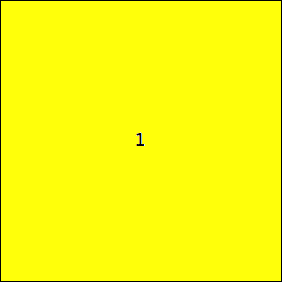 1 Trivial | 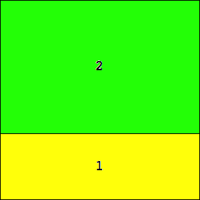 1/3 = .333+ Trivial | 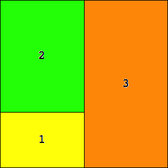 1/2 = .5 Trivial |
| 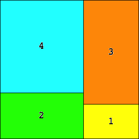 8/15 = .533+ Joe DeVincentis | 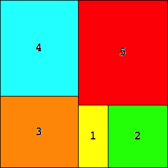 64/135 = .474+ Erich Friedman | 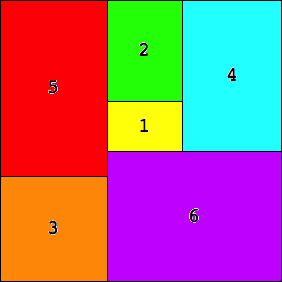 64/105 = .609+ Erich Friedman |
| 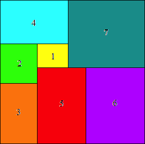 .614+ Maurizio Morandi | 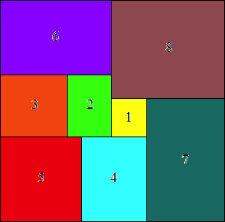 .620+ Maurizio Morandi | 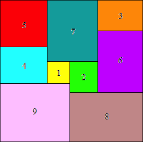 .675+ Erich Friedman |
| 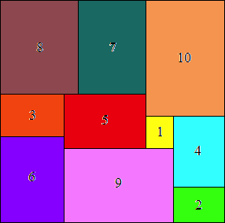 .671+ Maurizio Morandi | 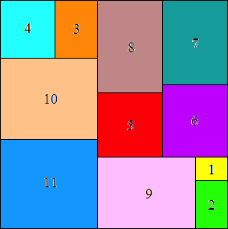 361/528 = .683+ Maurizio Morandi | 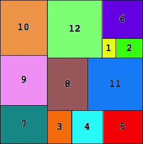 147/208 = .706+ Erich Friedman |
| 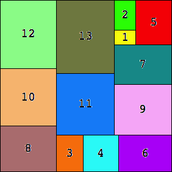 2548/3721 = .684+ Erich Friedman | 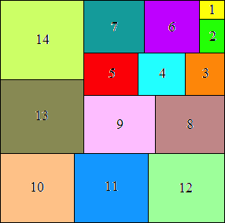 16384/23625 = .693+ Maurizio Morandi | 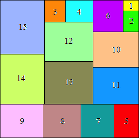 8281/12000 = .690+ Maurizio Morandi |
n(n+1)(2n+1)/3. In many small cases, this bound can be attained. It appears that S(n) ≤ √ n(n+1)(2n+1)/3 + 1. Trevor Green makes the following conjecture, which holds for n≤12.
Conjecture: Let S*(n) = √ A(n). Then S(n) is equal to S*(n) when S*(n)2 - S*(n) ≥ A(n) (and when n=4), and S*(n)+1 otherwise.
If this is true, A(n) = 2/3 × n3 + O(n2), S(n) = √(2/3) × n3/2 + O(n), so S(n) / n3/2 goes to √(2/3) as n gets large.
Here are the best known results for small n:
S(1)=2 Trivial | 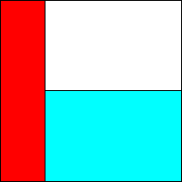 S(2)=4 Trivial | 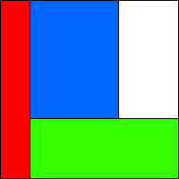 S(3)=6 Erich Friedman | 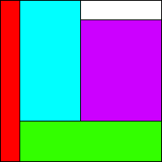 S(4)=8 Erich Friedman |
| 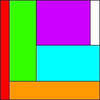 S(5)=11 Erich Friedman |  S(6)=14 Erich Friedman | 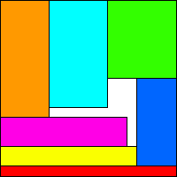 S(7)=18? Erich Friedman | 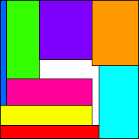 S(8)=21 Erich Friedman |
| 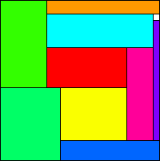 S(9)=25? Erich Friedman | 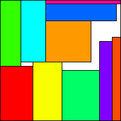 S(10)=29? Erich Friedman | 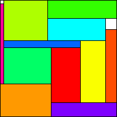 S(11)=33? Erich Friedman | 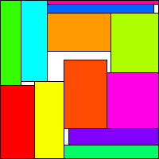 S(12)=37 Erich Friedman |
| 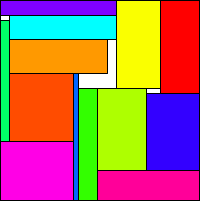 S(13)=43 Maurizio Morandi | 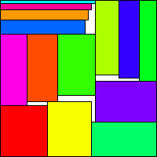 S(14)=46 Erich Friedman | 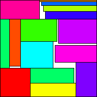 S(15)=51 Erich Friedman |
| 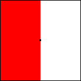 T(1) = 1/2 = .5 Trivial | 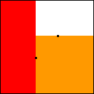 T(2) = (3-√5)/2 = .382+ Proved by Erich Friedman | 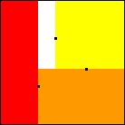 T(3) = .308+ Proved by Sasha Ravsky | 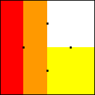 T(4) = 1/4 = .25 Proved by Sasha Ravsky |
| 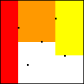 .211+ ≤ T(5) ≤ 2/9 = .222+ Found by Erich Friedman | 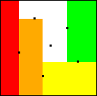 .179+ ≤ T(6) ≤ .196+ Found by Erich Friedman | 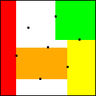 .174+ ≤ T(7) ≤ .173+ Found by Erich Friedman | .159+ ≤ T(8) ≤ .158+ Found by Erich Friedman |
| 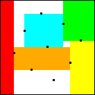 .146+ ≤ T(9) ≤ .145+ Found by Erich Friedman | .129+ ≤ T(10) ≤ .146+ Found by Sasha Ravsky | .105+ ≤ T(11) ≤ .146+ Found by Sasha Ravsky | .083+ ≤ T(12) ≤ .125+ Found by Sasha Ravsky |
If you can extend any of these results, please e-mail me. Click here to go back to Math Magic. Last updated 7/9/07.